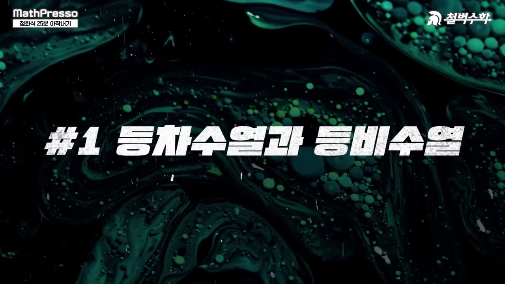
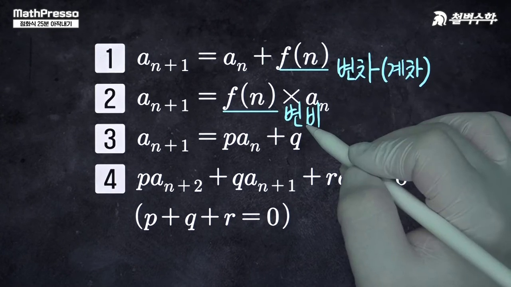
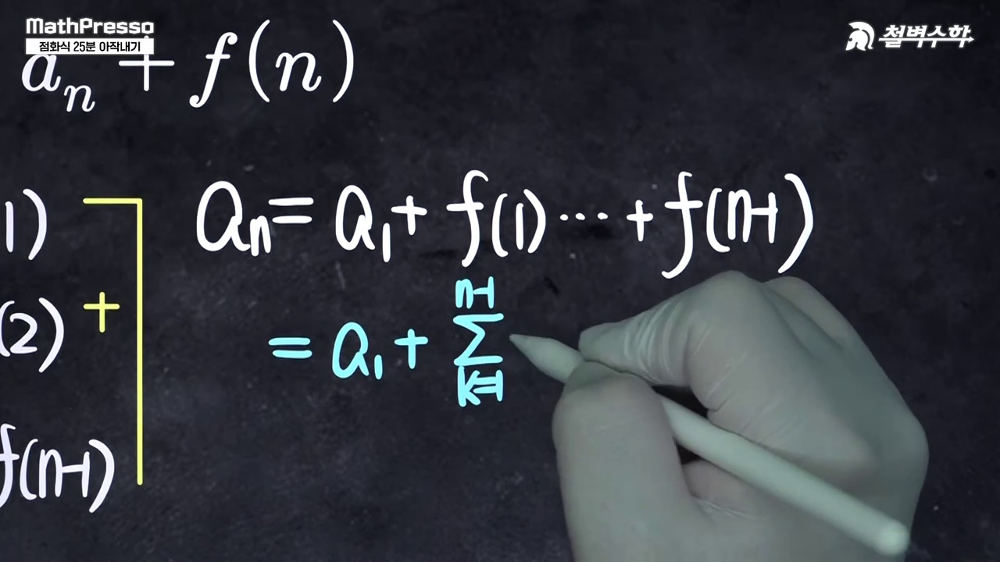
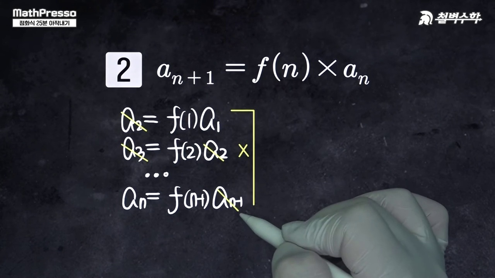
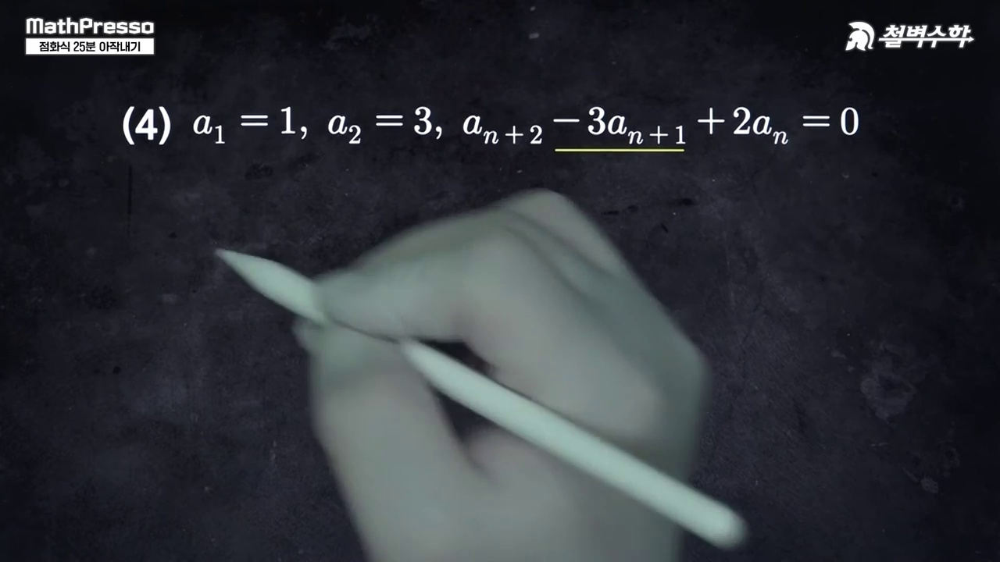
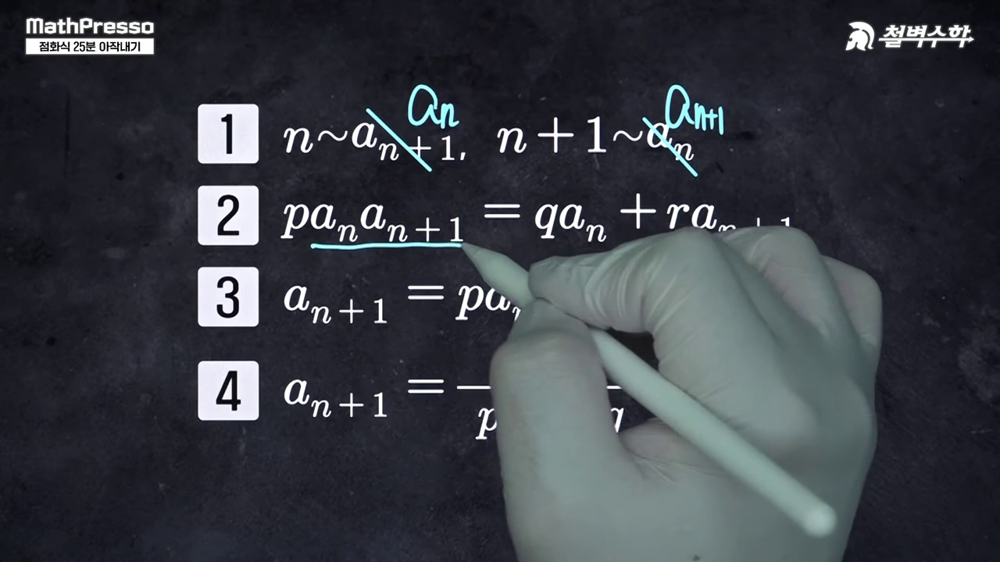
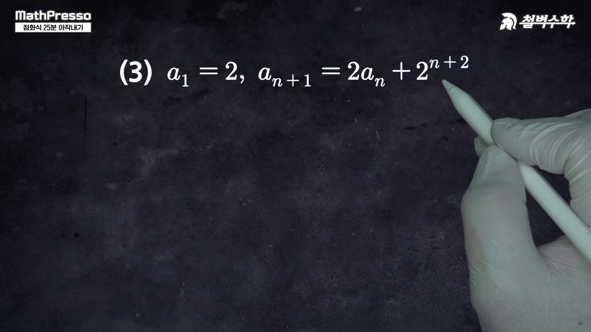
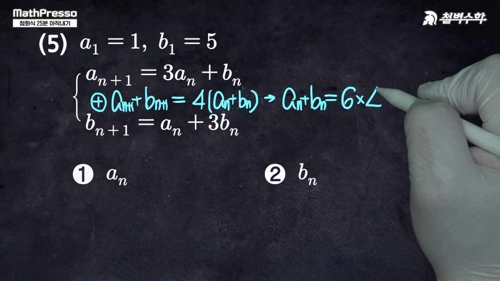
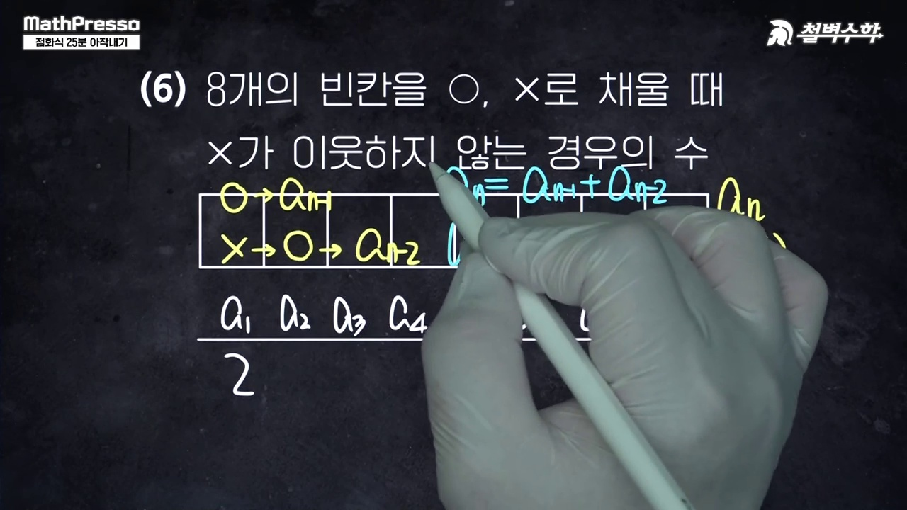

"수열의 귀납적 정의(점화식) 단원에서 더 이상 길을 잃지 마라!"
고교 수학에 등장하는 모든 점화식을 완벽하게 장악하는 10대 계통도:
기본 점화식 Big 4(등차·등비·계차·계비) · 특성방정식 $\alpha$ 변환 테크닉 · 3항간 계차등비형 및 역수치환꼴을 실시간 수열 시뮬레이터로 정복합니다.
수열을 직접 n으로 표현하는 일반항과, 이웃한 두 항의 관계식으로 정의하는 점화식의 개념 차이를 비교합니다.

공차 d와 공비 r을 나타내는 2항간, 3항간(등차중항/등비중항)의 표준 점화식을 정리합니다.

고교 수학의 근간을 이루는 4대 기본 점화식(등차, 등비, 계차, 계비)의 체계를 한눈에 정립합니다.

축차대입법으로 1부터 n-1까지 나열한 후 변변 더하여 시그마 공식을 유도하는 과정을 배웁니다.

연속 곱셈을 통해 대각선으로 상쇄 소거되는 계비수열의 일반항 유도법을 시연합니다.

특성근 α를 이용해 등차도 등비도 아닌 식을 순수한 등비수열로 치환 변환하는 핵심 원리를 전수합니다.

p + q + r = 0 조건에서 계차수열이 등비수열을 이루는 기하학적 메커니즘을 밝힙니다.

분모와 분자를 뒤집어 b_n = 1/a_n으로 치환하면 친숙한 등차/알파형으로 귀결됨을 보입니다.

지수로 나누거나 로그를 취해 곱셈 점화식을 덧셈 점화식으로 단순화하는 기교를 배웁니다.

수능 시험장에 들어갈 때 반드시 머릿속에 담아가야 할 점화식 의사결정 트리를 최종 정리합니다.
1. 알파(α) 특성방정식의 대수학적 원리
점화식 $a_{n+1} = p a_n + q$ ($p \neq 1$)에서 양변에 상수 $\alpha$를 빼어 등비수열 형태로 변형하고자 합니다:
$$a_{n+1} - \alpha = p(a_n - \alpha) = p a_n - p\alpha$$ $$a_{n+1} = p a_n + (1-p)\alpha$$기존 식의 상수항 $q$와 일치해야 하므로:
$$(1-p)\alpha = q \implies \alpha = \frac{q}{1-p}$$새로운 수열 $b_n = a_n - \alpha$는 초항이 $b_1 = a_1 - \alpha$이고 공비가 $p$인 등비수열이 되므로:
$$b_n = (a_1 - \alpha) p^{n-1} \implies a_n = (a_1 - \alpha) p^{n-1} + \alpha$$2. 3항간 점화식 $p a_{n+2} + q a_{n+1} + r a_n = 0$ ($p+q+r=0$)
$q = -(p+r)$을 대입하면 $p(a_{n+2} - a_{n+1}) = r(a_{n+1} - a_n)$이 되어, 계차수열 $b_n = a_{n+1} - a_n$이 공비 $\frac{r}{p}$인 등비수열이 됩니다!
__MANIM_CODE_25__